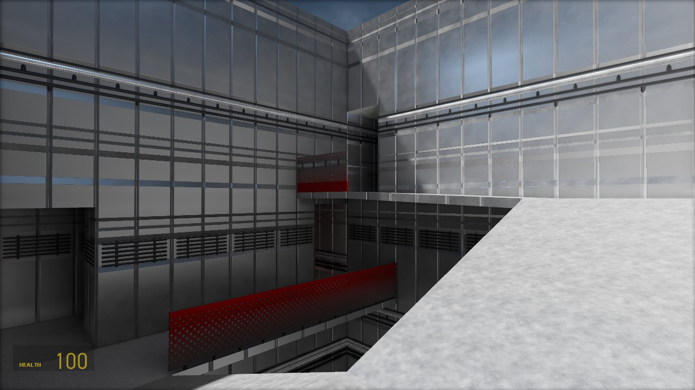
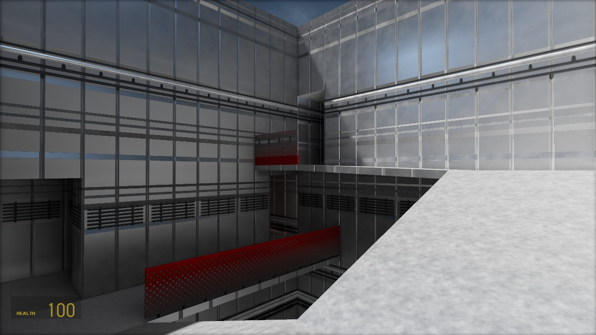
 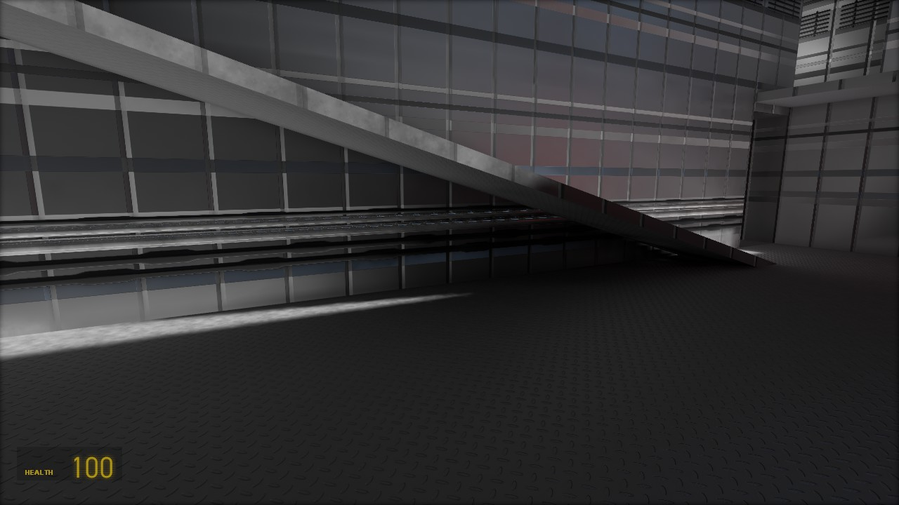
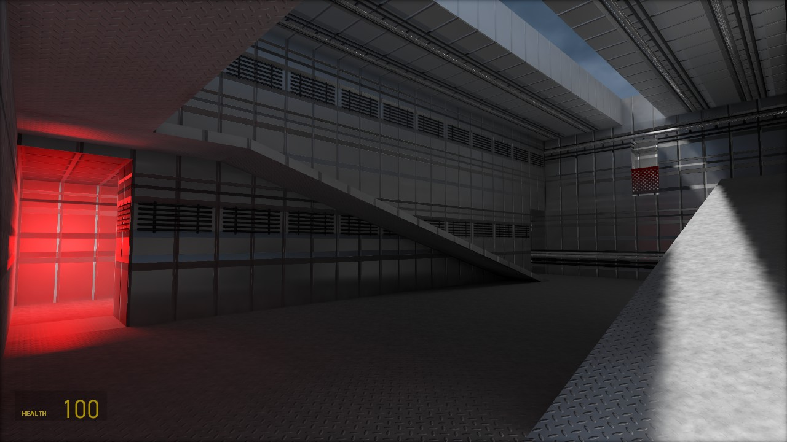
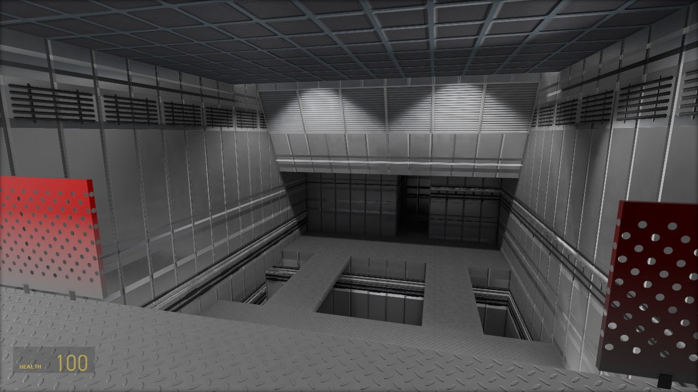
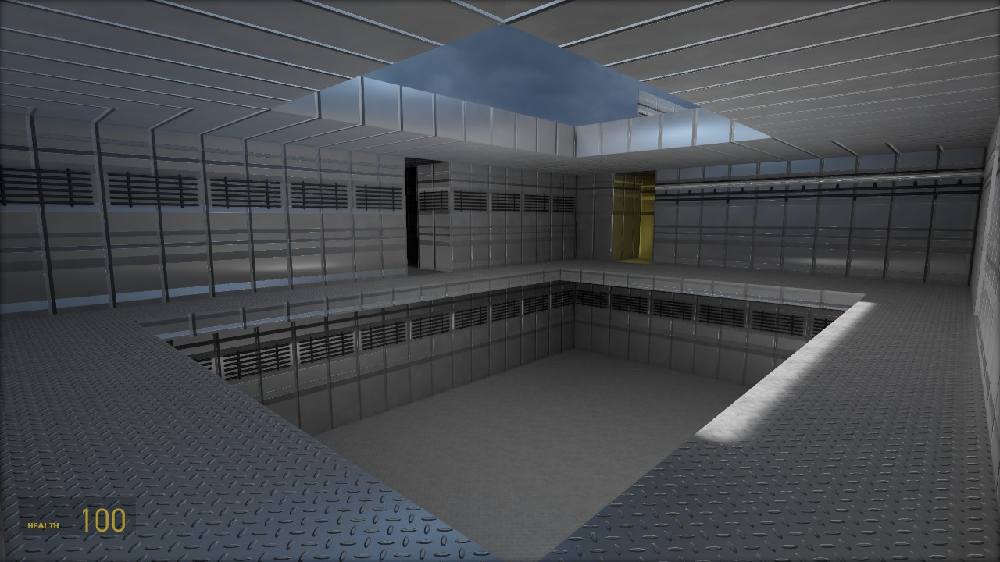
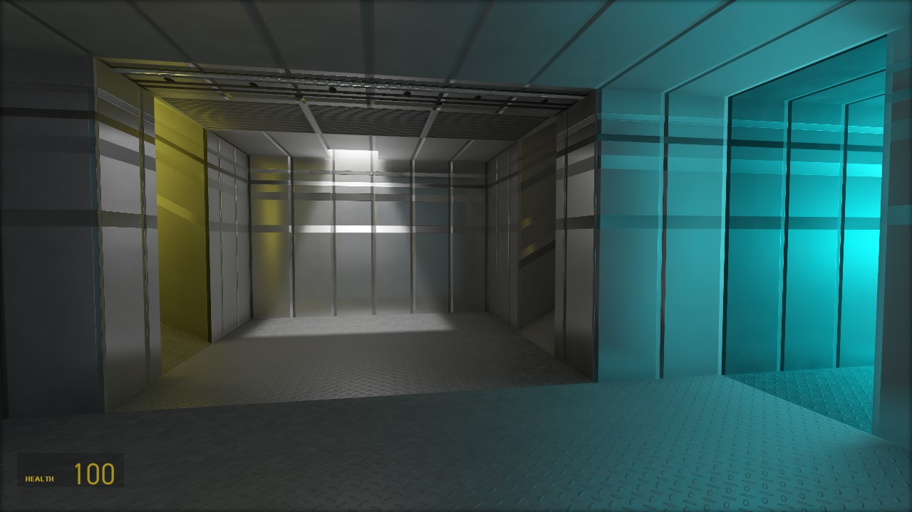
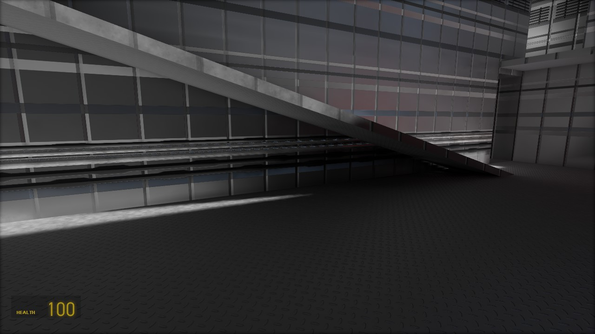
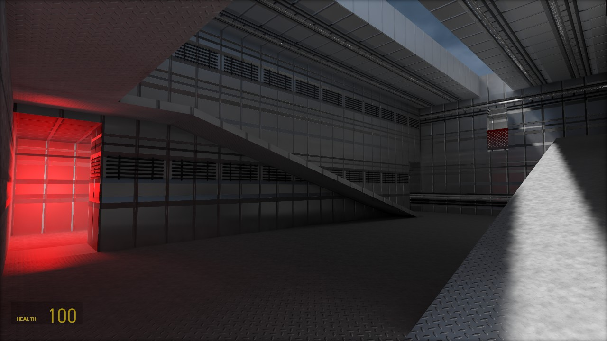
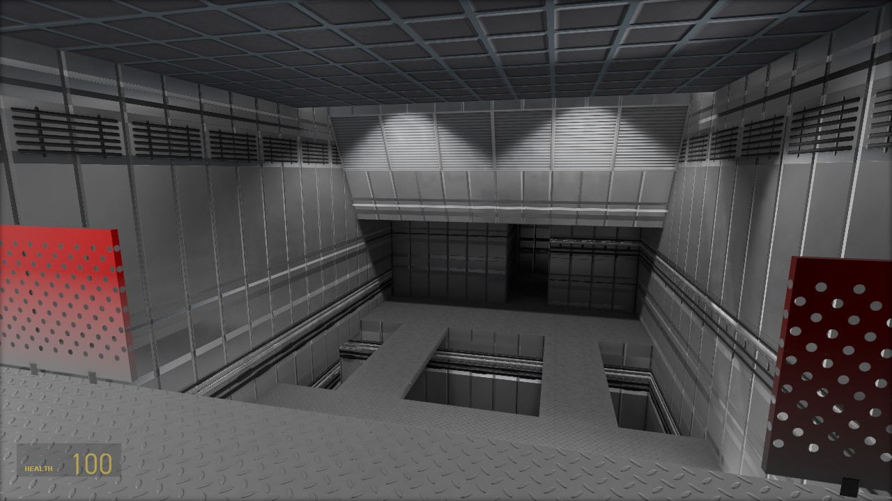
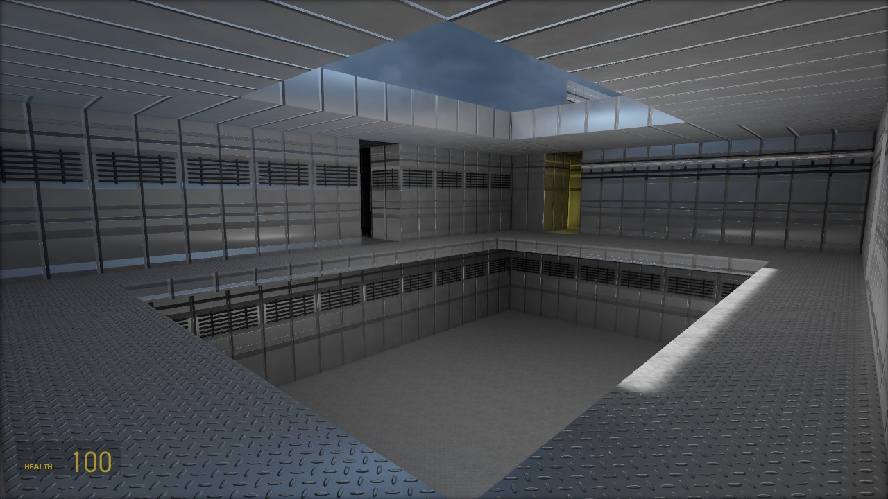
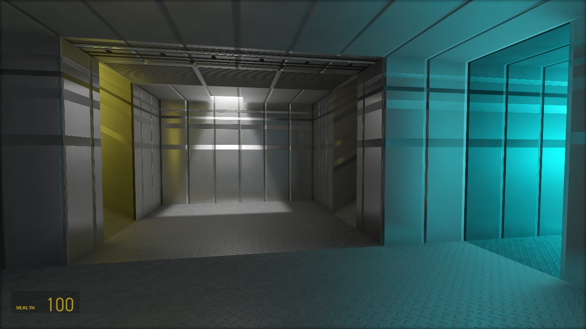
Using Blender, I recreated my favourite level from GoldenEye for Half-Life Alyx. I quit the project when I later found out the scale was all wrong, and the editor doesn't have a proper way of scaling the geometry and UVs. My computer was also struggling to run the game itself.
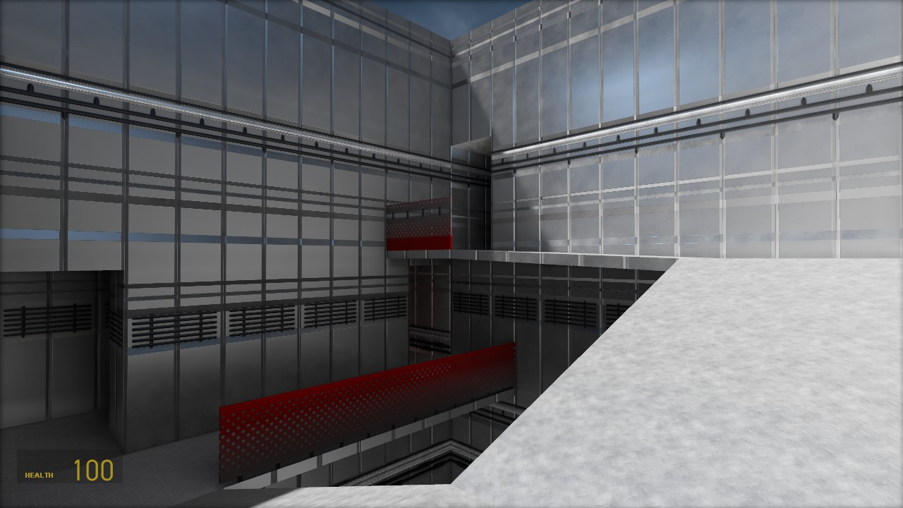
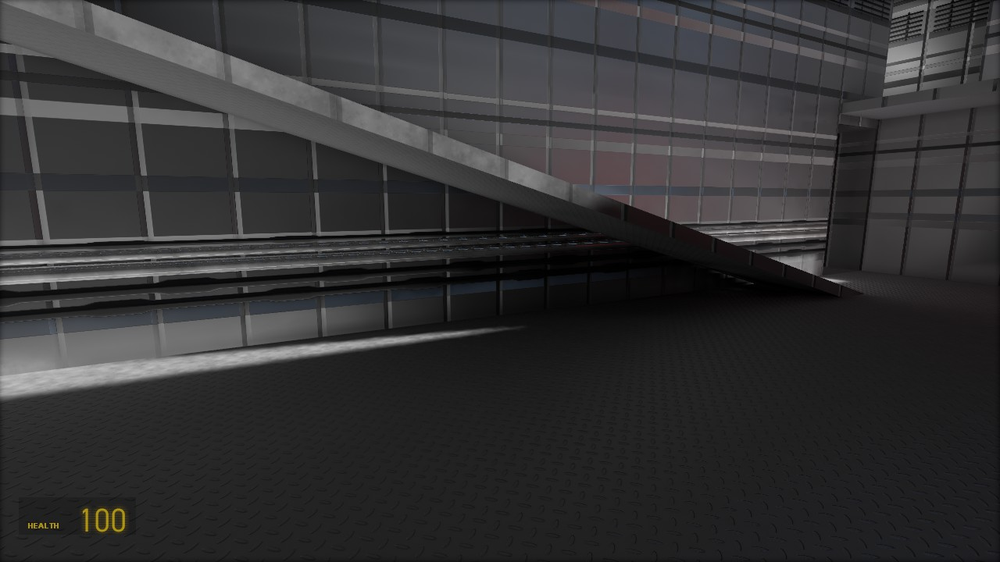
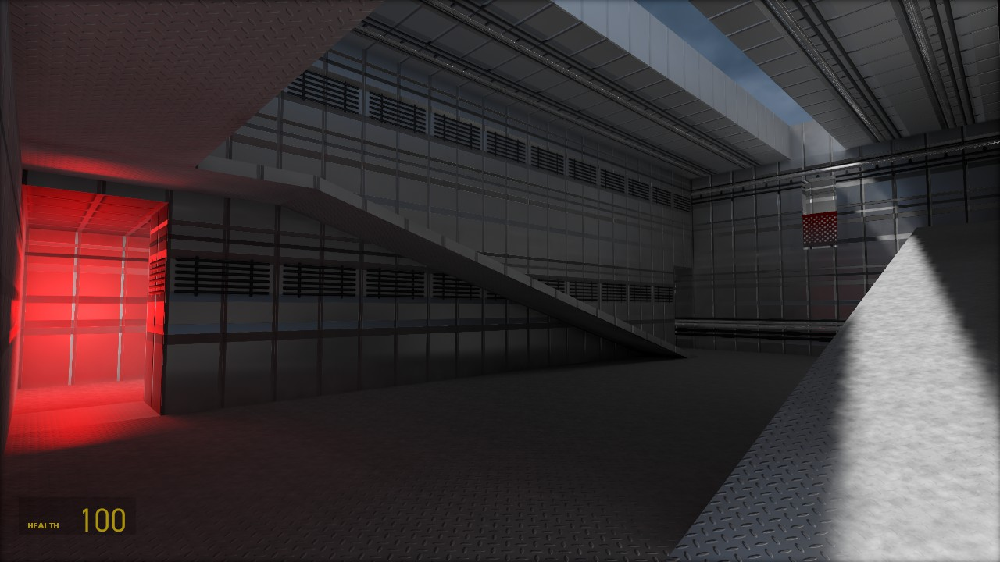
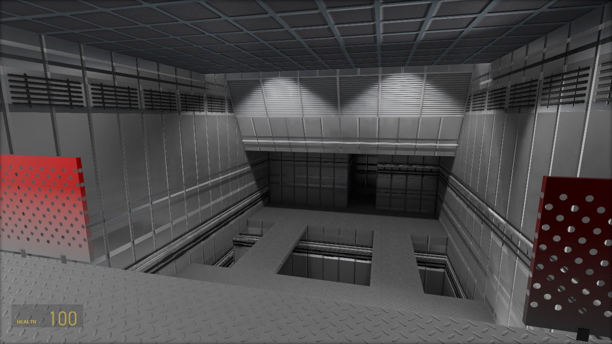
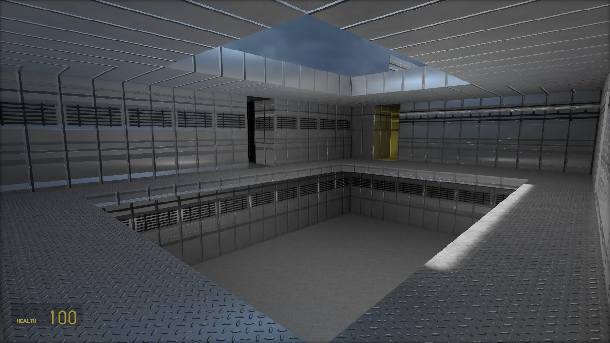
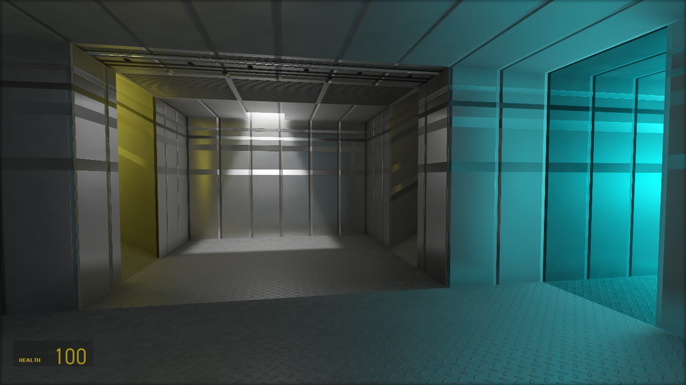
Here is a quick comparison of the original level. (Old images)
Blender has a nice way of exporting normal maps of geometry correctly. Usually artists will use a heightmap or something drawn and then process it through a program using various technics that don't create a realistic result. Using the same geometry I also exported Ambient Occlusion maps, Roughness, etc.
Because my computer struggled to run the game, I had only built the level in desktop mode. Once I finished most of the level I finally tried it in VR, and it was all too flat!
I still had all the files to rebuilt the level, but the scale would have to be fiddled with. Again the tools for scaling aren't in the editor even to this day.
What I've learned is that Blender actually has some excellent tools to accerlate this design and will use it in the future!
So now I wanted to try this in the Source 1 Engine. But I had a problem... How was I going to add ambient occlusion?
Don't mind the floors or ceiling, those are cubemap reflection errors.
The effect is sudtle but no where I have seen anyone do this. What I did was exploit the self illuminate mask. You invert the Ambient Occlusion, set the scale to about 0.01 percent, and you've got some fake Ambient Occlusion. Since the game's lighting already accounts for self illuminated textures, the effect works as intended!
Here's another room with different lighting and some reflections. Was just a test to see how it would look.